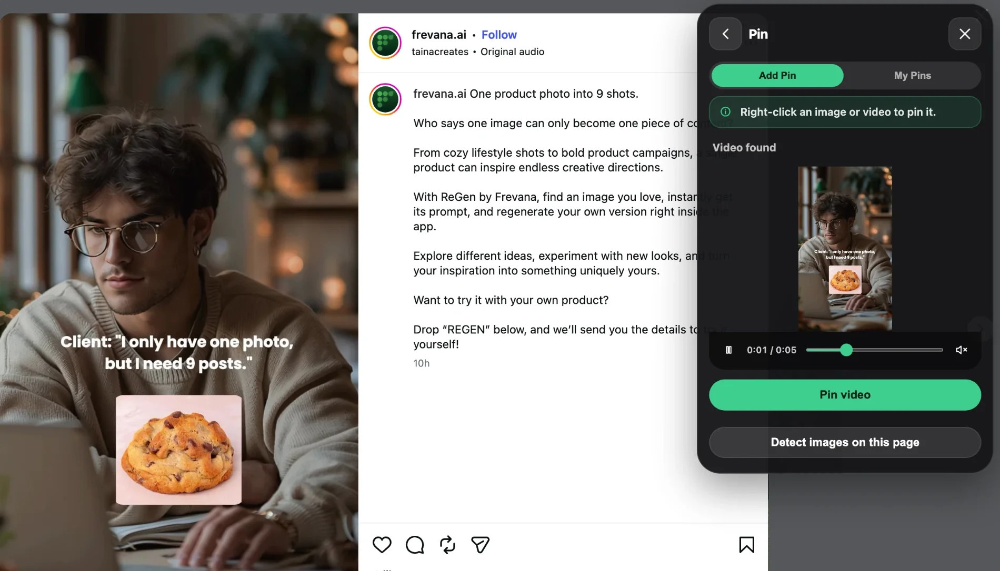
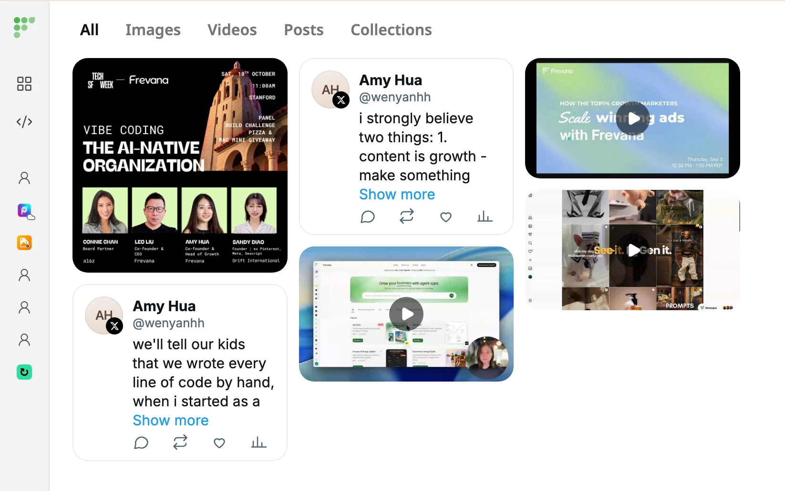

Pins: the social video downloader
Pin any video you find on social and the web in one click, then download it, keep it in your library, or remake it with AI.

What you can do
Everything a video downloader does, plus a library and AI remakes.
How to download a video with Pins
Three steps, no copying links into a downloader site.
-
Open the video
Go to the page with the video you want. Click Frevana in Chrome's extensions menu and select Pin.
-
Pin it
Hover and click the Pin pill, right-click and choose Pin video, or let Pins find the video and click Pin video.
-
Download
Once the video is pinned, click Download to save the file. It also stays in My Pins for later.

Pin more than videos
Pins saves the rest of what you find too, and it all lands in My Pins, so the ad you saw on Monday is still there on Friday.
- ImagesHover or right-click to pin one, or use Detect images on this page to pin several at once.
- PostsOpen a post on X or LinkedIn, then choose Post found → Pin post.
- TextHighlight a passage and click the Pin pill beside it.
Why teams use Pins as their video downloader
Most video downloaders make you copy a link, paste it into a website full of ads, and hope the file comes back. Pins works where you already are: on the page, inside Chrome. Spot a video, pin it, and download it without leaving the tab.
Pins is built for marketers, creators and ecommerce teams who collect references every day. It fits the way they already work: browse, spot something worth keeping, save it without breaking stride.
Because Pins is part of Frevana, a download is a starting point rather than a dead end. Send a pinned video to ReGen to turn it into a reusable prompt, or open it in Ad Clone and AI Product Video Studio to make an on-brand version for your own product.
People also search
High-intent terms this app is built to rank and convert on.
- video downloader
- social video downloader
- video downloader for Chrome
- download video from website
- online video downloader
- Instagram video downloader
- TikTok video downloader
- X video downloader
- LinkedIn video downloader
- Facebook video downloader
- save video from Twitter
- MP4 downloader
- video saver extension
- download ad videos
- Frevana Pins
Frequently Asked Questions
How do I download a video with Pins?
Open the page with the video, open Frevana from Chrome's extensions menu and select Pin. Pin the video with the hover pill, right-click, or automatic detection, then click Download.
Which websites does Pins work on?
Pins looks for videos on the page you have open in Chrome. If it doesn't find one, play the video first or select it directly with the hover pill or right-click.
Can I save images and posts too?
Yes. Pin single images or use Detect images on this page to pin several at once. Post detection works on individual X and LinkedIn posts, and you can pin any selected text.
Where do my pinned videos go?
Every pin is saved to My Pins, your library inside the Frevana extension. Open Pin and switch to the My Pins tab to browse, download, or remove saved items.
How is Pins different from other video downloaders?
You download from the page itself instead of pasting links into a separate site, and every video stays organized in one library. You can also send it to ReGen or Ad Clone to make your own version.
Can I download any video I find?
Only download videos you own or have permission to use, and follow each platform's terms. Pins is designed for saving references and inspiration.
Start downloading with Pins
Add Frevana to Chrome, pin your first video, and download it in a click.